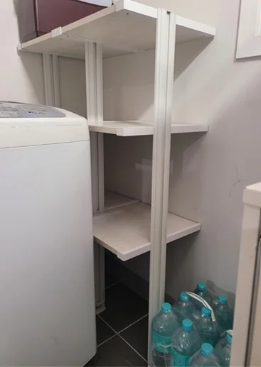

Veranda & Laundry
베란다·세탁실
선반 제작
세탁기 옆 한 뼘, 창문 옆 한 칸이 수납공간이 됩니다.
베란다와 세탁실은 창문, 배수구, 바닥 단차, 수도 배관처럼 신경 쓸 것이 많아서 기성 선반을 놓으면 창문이 안 열리거나 선반이 기울기 쉽습니다. 그래서 창문 개폐 범위와 바닥 높이 차이까지 재고 선반 위치를 잡습니다.
베란다 벽은 단열재가 들어간 경우가 있어 일반 방과 고정 방식이 다를 수 있습니다. 코니처는 실측 때 벽 상태를 확인하고 그에 맞는 방법으로 고정합니다. 세탁기 위 공간은 세탁기 뚜껑과 문 열림을 피해 높이를 정합니다.

Situations
이런 자투리 공간에 많이 만듭니다
세탁기 옆·위 공간
세제와 수건을 둘 선반을 세탁기 문 열림을 피해 설치합니다.
베란다 한쪽 벽
식재료, 생활용품을 둘 팬트리처럼 여러 단으로 구성합니다.
창문 옆 좁은 벽
창이 끝까지 열리도록 선반 깊이와 위치를 맞춥니다.
작업대가 필요한 베란다
ㄱ자로 작업대형 상판과 수납 선반을 함께 넣습니다.
Checklist
베란다·세탁실에서 꼭 재는 것
| 재는 것 | 확인 내용 | 반영하는 부분 |
|---|---|---|
| 창문 | 창 위치, 여는 방향과 범위 | 선반 깊이와 높이 |
| 바닥 | 단차, 배수구 위치, 기울기 | 기둥 위치와 수평 맞춤 |
| 벽 | 단열재 여부, 벽 재질 | 고정 방식 |
| 세탁기 | 뚜껑·문 열림 높이, 배관 | 선반 시작 높이 |
| 수납할 물건 | 세제, 수건, 식재료, 공구 등 | 단 간격과 하중 |
Process
베란다 선반 제작 순서
사진 받기
베란다나 세탁실 전체와 창문이 나오게 찍어 보내주세요.
실측
창문 범위, 바닥 단차, 벽 재질을 확인합니다.
구성·견적
넣을 물건에 맞춰 단수와 위치를 정하고 견적을 드립니다.
제작
실측 치수에 맞춰 선반과 상판을 준비합니다.
설치
수평을 맞춰 고정하고 창문 개폐를 확인합니다.
Related
함께 보면 좋은 안내
FAQ
자주 묻는 질문
세탁기 위에도 선반을 달 수 있나요?
네. 세탁기 뚜껑이나 문이 열리는 높이를 확인하고 그 위로 선반을 설치합니다.
베란다 바닥이 기울어 있어요.
배수 때문에 바닥이 기운 경우가 많습니다. 실측 때 단차를 확인해 선반이 수평이 되도록 맞춥니다.
작업대도 같이 만들 수 있나요?
네. 베란다 구조에 따라 작업대형 상판과 수납 선반을 함께 구성할 수 있습니다.
벽에 구멍을 내야 하나요?
벽 고정이 필요한 경우가 많습니다. 고정 위치는 설치 전에 미리 안내해 드리며, 벽 보수는 하지 않습니다.
견적은 사진으로 되나요?
대략적인 안내는 사진으로 가능하고, 정확한 견적은 실측 후 드립니다.